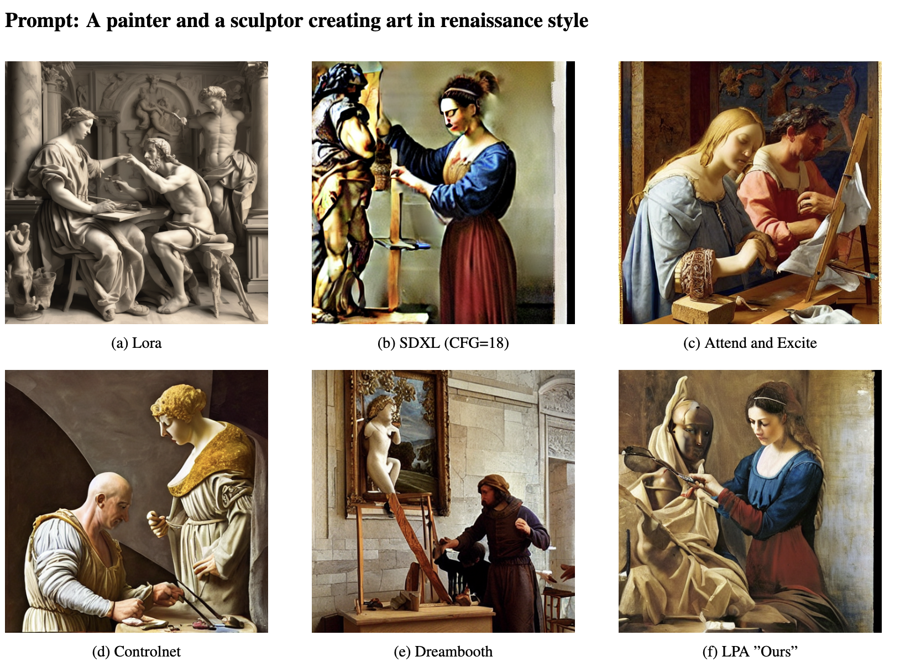

When a prompt like "A red car and a blue bicycle in watercolor style" is fed to SDXL or SD1.5, the model treats all tokens equally: the style bleeds unevenly across objects, and object boundaries tend to collapse. This is because standard cross-attention has no mechanism to scope style tokens to specific objects or to specific denoising stages.
Split the prompt into content tokens (objects, layout) and style tokens (artistic style, texture) using a lightweight parser.
Define injection windows: content tokens are injected early (high-noise steps) to anchor layout; style tokens are injected later (low-noise steps) to apply texture.
Selectively replace cross-attention keys/values in specified U-Net layers with the corresponding token subset at each timestep window.
Standard DDIM/DPM++ sampling proceeds: no retraining, no fine-tuning, one config change.
The optimal configuration found through ablation is LPA Late Only with a 300–650 step injection window, which delivers the strongest balance of prompt alignment and style consistency.
| Method | CLIP-Prompt ↑ | CLIP-Style ↑ | Training Required? |
|---|---|---|---|
| SDXL (vanilla) | 0.2841 | 0.2203 | — |
| SD1.5 (vanilla) | 0.2748 | 0.2184 | — |
| SDXL + CFG tuning | 0.2859 | 0.2218 | No |
| LPA Late Only (ours) | 0.2853 (+0.41%) | 0.2211 (+0.08%) | No |
Results on T2I benchmark (SDXL comparison) and custom 50-prompt style-rich benchmark. All improvements with zero diversity loss.
@article{sanjyal2025lpa,
title = {Local Prompt Adaptation for Style-Consistent Multi-Object Generation in Diffusion Models},
author = {Sanjyal, Ankit},
journal = {arXiv preprint arXiv:2507.20094},
year = {2025}
}